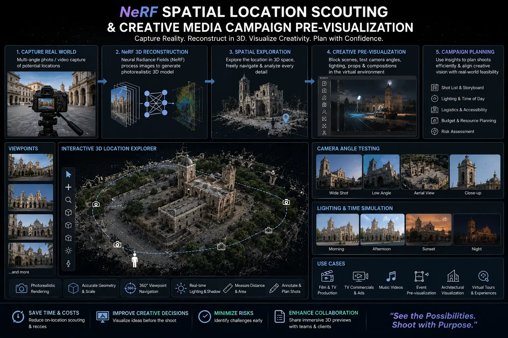
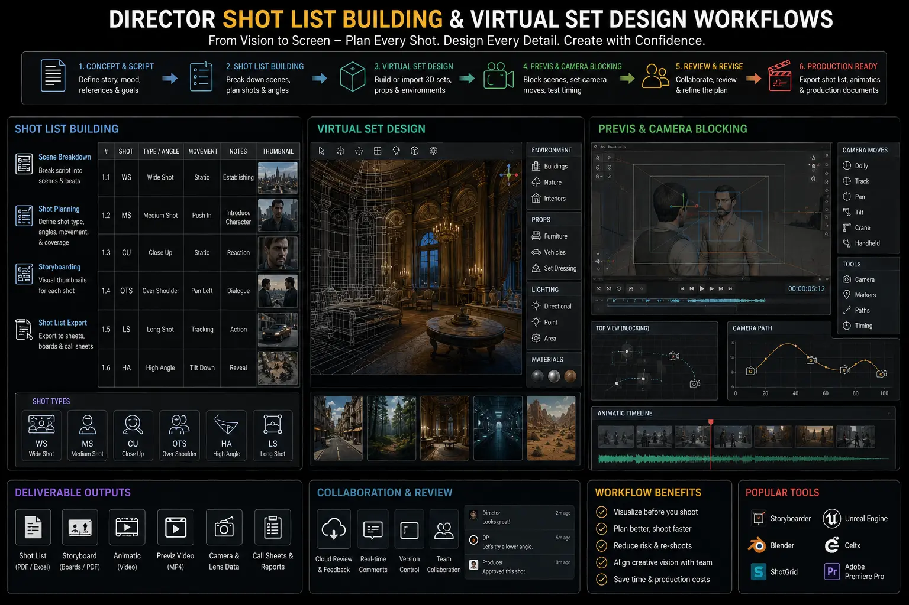

Using Neural Radiance Fields (NeRF) to Map Physical Shoot Locations in 3D Prior to Production
The Challenges of Traditional Location Scouting
In professional Video Shoot Pre-Production, scouting physical locations is a major logistical challenge. Directors, cinematographers, and production designers typically travel to locations to evaluate camera placements, block scenes, and assess lighting setups. While these visits are useful, they only offer a snapshot. Creative decisions are often delayed because the team back at the studio cannot visualize the space accurately from standard 2D photos or videos, leading to setup delays on the actual shoot day.
Advanced spatial mapping tools resolve these pre-production bottlenecks. By implementing NeRF Spatial Location Scouting workflows, production teams can convert simple smartphone video scans of a location into an interactive, photorealistic 3D digital twin. This model allows team members to explore the space virtually from their design studio.
By utilizing these virtual sets, directors can refine their Creative Media Campaign Pre-Visualization pipelines. This approach allows crews to plan lens setups, coordinate lighting placement, and test camera angles virtually, reducing physical setup times.
How NeRF Spatial Mapping Works
Building a photorealistic virtual location map involves several technical capture and processing steps:
- On-Site Scanning. A scout captures a series of overlapping video loops of the location using a standard mobile phone or drone, covering all angles.
- 3D Scene Generation. The neural network processes the video files, analyzing lighting and geometry to generate a photorealistic 3D model of the space.
- Virtual Camera Blocking. The director imports the 3D model into pre-visualization software, checking camera angles and framing to support Director shot list building.
- VFX Integration. Designers use the digital twin to test virtual props and VFX overlays, streamlining virtual set design workflows.
Precise Pre-Production
Using NeRF Spatial Location Scouting allows production crews to test camera movements virtually, minimizing spatial errors.
Fewer Setup Delays
Planning lighting placements and camera coordinates on a digital twin helps in minimizing commercial shoot delays on set.
Integrated VFX Workflows
Generative spatial models provide accurate camera tracking data, supporting clean virtual set design workflows for post-production.
Optimized Campaigns
Integrating spatial twins into Creative Media Campaign Pre-Visualization pipelines ensures that creative concepts fit the physical location perfectly.

Mapping Spatial Coordinates for Camera Tracking
In addition to visual blocking, NeRF models generate clean spatial coordinate data that VFX teams use to align physical and digital camera movements:
- Generating Camera Matrices. The 3D model extracts precise coordinate points, allowing editors to build pre-production camera tracking matrices.
- Simulating Lighting Scenarios. Because NeRF captures lighting details, designers can test different simulated lighting directions, anticipating shadow positions on shoot day.
- Building Digital Twins. Production teams use this data for building digital twins for film, maintaining a detailed 3D archive of locations for potential future reshoots.
NeRF Mapping Tools
- Luma AI for fast smartphone spatial scans.
- Instant NeRF for high-speed GPU processing.
- Nerfstudio for custom developer pipelines.
- Unreal Engine 5 for virtual set integration.
Location Scouting Steps
- Record overlapping video loops of the physical location.
- Upload files to the neural processing pipeline.
- Generate and clean the 3D spatial mesh model.
- Export the model to virtual camera platforms.
Technical Deliverables
- Photorealistic 3D location digital twins.
- Pre-production camera tracking coordinate files.
- Virtual lens and framing reference grids.
- Digital lighting design blueprints.

Conclusion
Neural Radiance Fields have changed how film sets are scouted and planned. By incorporating NeRF Spatial Location Scouting and Creative Media Campaign Pre-Visualization pipelines, creative teams can explore photorealistic location models virtually, minimizing planning errors. Utilizing these models for **building digital twins for film** helps streamline **virtual set design workflows**, optimizing your pre-production timeline.
At The PhD Ads, we use advanced virtual scouting tools to plan commercial shoots. Our production team integrates pre-production camera tracking matrices and Director shot list building grids to map locations, helping clients manage campaigns with advanced media tech tools.
Key Topics
Visualize Your Set in Photorealistic 3D
At The PhD Ads, we use NeRF spatial location mapping to build 3D digital twins of physical locations, allowing our crew to block camera angles and lighting setups virtually before the shoot.
Email: team@e2o.in